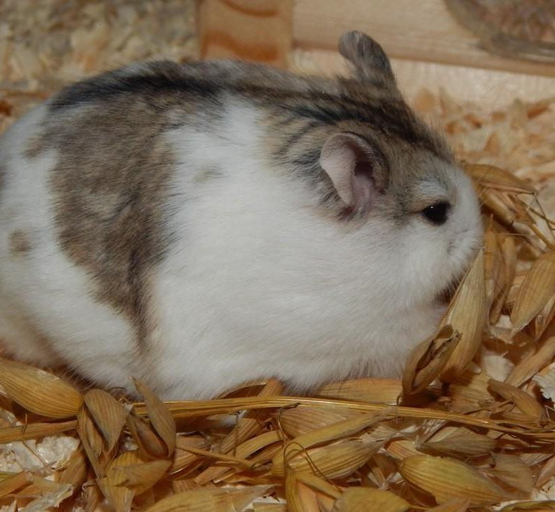

Как содержать хомяков Кемпбелла?
Хомячок Кэмпбелла - нетребовательный грызун, который не занимает много места и не нуждается в специальном микроклимате. Он легко привыкает к любым условиям и может жить дааже в небольшой квартире.
Клетка и наполнитель
Хомяки Кэмпбелла не отличаются крупными габаритами и комфотрно чувствуют себя в стеклянных аквариумах или небольших клетках с частыми прутьями и пластиковым поддоном. Размеры их жилища должны быть не меньше 40×60 см.
Клетки для этих домашних питомцев размещают подальше от сквозняков,прямых солнечных лучей и отопительных приборов. Внутри обязательно устанавливают тяжелую кормушку, поилку, ванночку для купаний, домик, беговое колесо, лабиринт и лоток для походов в туалет
На заметку! В качестве наполнителя рекомендуется использовать опилки или древесную стружку. А вот от применения бумаги, пряжи и ваты лучше воздержаться.

Уборка
Убираться в жилище нужно не чаще раза в неделю. После уборки насыпьте в клетку горсточку «старого» наполнителя. Для грызунов большой стресс, когда в клетке не остается родного запаха. Очень редко, раз в несколько месяцев, можно тщательно мыть клетку с использованием моющих средств, например, соды. Химические средства использовать не рекомендуется.
Прогулки
Хотя бы иногда необходимо выпускать питомца из клетки, чтобы он побегал. Прогулки следует проводить очень осторожно, отпускать хомяка свободно гулять по квартире не стоит. Лучше приобрести для этой цели специальный прогулочный шар или смастерить своеобразный вольерчик. Выпускать хомку на улицу категорически нельзя: он может простудиться, потеряться или заразиться какой-либо болезнью.
Любопытны фокусы хомячка кэмпбелла с температурой своего тела: во время ночной активности температура подымается до 40 °С. В покое, в дневное время, когда грызун находится в своем гнезде, температура тела падает до 20 °С. Ученые объясняют этот феномен экономией сил и ресурсов организма.
Интересный факт – хомячки видят все в черно-белом цвете, при этом у них очень плохое зрение.
Питание
Питания представителей данной породы ничем не отличается от ежедневной пищи других грызунов. В нем должны преобладать злаковые корма. В зоомагазинах к выбору животноводов предоставлены специальные смеси из зерновых продуктов. Такой корм можно приготовить и самостоятельно, смешав в равных пропорциях зерна пшеницы, овса, кукурузы, тыквенных и подсолнечных семечек, орехов. Преимущество магазинной смеси лишь в том, что она обогащена специальными витаминами.
Чтобы питомец рос здоровым, ему можно давать овощи (кроме картошки, лука, чеснока, кабачка), фрукты (исключив цитрусовые) и ягоды. В ежедневный рацион хомячка Кэмпбелла следует включать зелень петрушки, клевера, укропа, баловать его листьями одуванчика и салата. Если со свежими фруктами и овощами дела обстоят не лучшим образом, в рацион питомца можно включать сухофрукты. Иногда в кормушку для хомячка можно подкладывать творог, отварное куриное мясо, овсяную, манную и пшеничную каши. Изредка добавляя в рацион грызуна вареную печень, можно наблюдать, как шерсть на его шкурке становится шелковистой.
В процессе кормления важно не переусердствовать. Огромные порции еды хомяк попросту не осилит и станет делать запасы в укромных местах. Если это окажутся скоропортящиеся продукты, то от таких «закромов» зверек может заболеть. Кормить хомячка следует не чаще двух раз в сутки.
Запрещенные для хомяков продукты:
- Пища с человеческого стола.
- Соленое, острое, копченое, сладкое, жареное.
- Капуста и помидоры.
- Цитрусовые и киви.
- Кедровые орехи.
- Арахис.
- Миндаль.
- Какао.
- Семена и косточки фруктов.
- Хурма.
- Лук и чеснок.
Вернуться назад